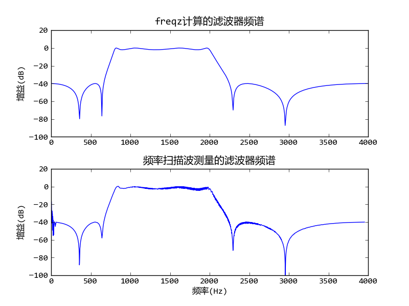

相关文档： SciPy-数值计算库
用scipy.signal库设计带通滤波器，并用频率扫描波测试其频率响应。
# -*- coding: utf-8 -*-
import scipy.signal as signal
import pylab as pl
import numpy as np
#取样频率为8kHz
sampling_rate = 8000.0
# 设计一个带通滤波器：
# 通带为0.2*4000 - 0.5*4000
# 阻带为<0.1*4000, >0.6*4000
# 通带增益的最大衰减值为2dB
# 阻带的最小衰减值为40dB
b, a = signal.iirdesign([0.2, 0.5], [0.1, 0.6], 2, 40)
# 使用freq计算滤波器的频率响应
w, h = signal.freqz(b, a)
# 计算增益
power = 20*np.log10(np.clip(np.abs(h), 1e-8, 1e100))
# 绘制增益
pl.subplot(211)
pl.plot(w/np.pi*sampling_rate/2, power)
pl.title(u"freqz计算的滤波器频谱")
pl.ylim(-100,20)
pl.ylabel(u"增益(dB)")
# 产生2秒钟的取样频率为sampling_rate Hz的频率扫描信号
# 开始频率为0， 结束频率为sampling_rate/2
t = np.arange(0, 2, 1/sampling_rate)
sweep = signal.chirp(t, f0=0, t1 = 2, f1=sampling_rate/2)
# 将频率扫描信号进行滤波
out = signal.lfilter(b, a, sweep)
# 将波形转换为能量
out = 20*np.log10(np.abs(out))
# 找到所有局部最大值的下标
index = np.where(np.logical_and(out[1:-1] > out[:-2], out[1:-1] > out[2:]))[0] + 1
# 绘制滤波之后的波形的增益
pl.subplot(212)
pl.plot(t[index]/2.0*4000, out[index] )
pl.title(u"频率扫描波测量的滤波器频谱")
pl.ylim(-100,20)
pl.ylabel(u"增益(dB)")
pl.xlabel(u"频率(Hz)")
pl.subplots_adjust(hspace=0.3)
pl.show()